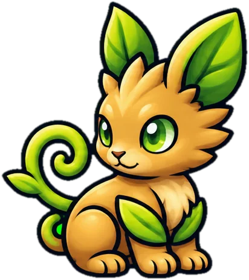

 Grass
GrassTap a stage to read its story.
Sproutkit is an utterly charming small lynx kitten whose warm tan-and-green fur sprouts little leaf buds at its ears and tail-tip. Two large green leaf-ears fan out from its head in place of ordinary ear-tufts, and its long curling tail ends in a bright green leaf. It prowls the Light Grove on oversized kitten paws, batting at falling leaves with the same intensity it will one day bring to real hunting. Its green ears fold flat when it is concentrating and fan wide when it is happy - a reliable mood indicator that the grove's other creatures have all learned to read.
Field note: Sproutkit's leaf-ears droop by precisely thirty degrees each hour as it grows sleepy; grove-keepers use this as a nap timer.
Light Grove. Sproutkit and its family are found in the Light Grove. See everyone who lives there.
Share a Bond Food that matches its types to become friends. Sproutkit loves:
A Bond Food is not a trick. It joins your spirit with the Kimuro's spirit, and only when it chooses you.
Print the Kimuro adventure packs: mazes, cards, a board game and Bond Mark medals.
See the printable packs